How Generative AI Works, and How It Gets Small
The ideas behind the projects in this book
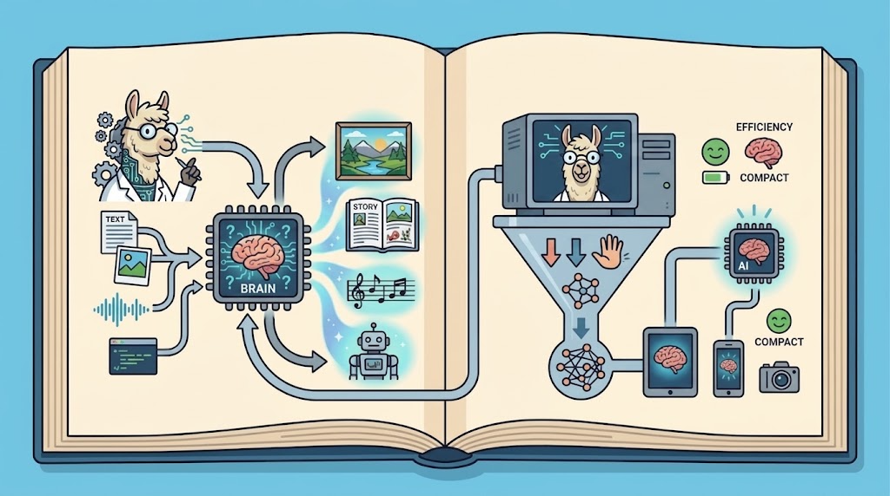
1. What Makes a Model “Generative”
A generative model is one that creates new content rather than sorting existing content into boxes. It learns patterns from a large body of data — text, images, audio, video — and then produces outputs that did not exist before.
That distinction is the whole basis for how this book is organized. The classifier in Part 2 looks at a photograph and answers “robot” or “periquito.” It picks from a fixed list it was trained on. The language model in Part 1 is asked about a mosquito breeding site and writes a sentence that nobody has written before. Same board, same Linux, completely different kind of machine.
The model families you have heard of are all generative in this sense, and they differ mostly in size and modality:
| Where they run | Text | Vision + language |
|---|---|---|
| Data center | GPT, Claude, Gemini, Grok, Kimi | Gemini, GPT |
| Edge devices | Gemma, Phi, Llama, Qwen, SmolLM | Moondream, PaliGemma, Florence, Qwen-VL |
Hold on to that second row. Those are the ones that will actually run on the hardware in this book.
2. What “at the Edge” Adds
GenAI at the edge means the model lives on the device — not in a data center.
Large language models generally need cloud infrastructure: racks of GPUs, a network connection, and someone’s bill. But compact Small Language Models (SLMs) and small Vision-Language Models (VLMs) run directly on edge devices, and they have become good enough to be genuinely useful.
The trend is worth naming. As of 2026, models in the sub-10B range are increasingly competitive with much larger generalists on specific tasks — programming, medical triage, structured extraction — because a focused model trained well on a narrow domain does not need the breadth of a frontier model. This is a moving target, and the specific claims here will age faster than the rest of the book, but the direction has held for several years now: smaller, more specialized, and local keeps getting more viable.
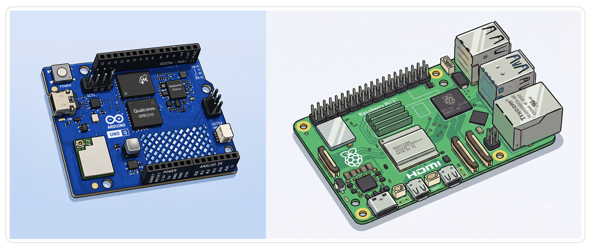
The energy argument
There is a second reason to care, and it is not about convenience.
| Where inference happens | Rough power draw |
|---|---|
| Microcontroller (TinyML) | ~0.5 W |
| Edge SBC — UNO Q, Raspberry Pi | ~5–20 W |
| Cloud GPU (server side, per query) | 100 W+ |
An edge device doing comparable work can be on the order of 100× more energy-efficient than a cloud query. Multiply that across billions of inferences a day and sustainability stops being a footnote — it becomes an engineering and economic argument for pushing intelligence outward.
For a project in a developing country, there is a third argument that follows directly: a device that runs offline, draws a few watts, and costs nothing per token is usable in places where a cloud subscription and reliable connectivity are not assumptions you get to make.
3. One Field, Many Scales
Machine learning lives on a spectrum defined by where the computation happens.
- CloudML — massive models in data centers. Effectively unlimited compute, at the cost of latency, connectivity, and privacy.
- EdgeML — capable devices running models locally: phones, single-board computers, the Arduino UNO Q.
- TinyML — machine learning on microcontrollers, drawing milliwatts, with kilobytes of RAM and no operating system.
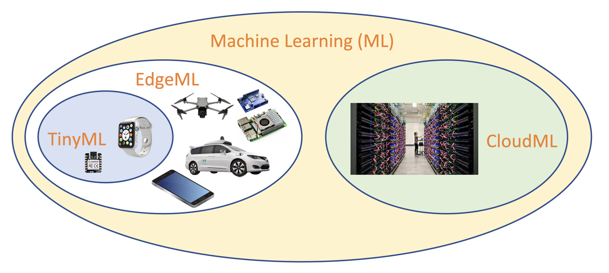
These are not competing camps. They are on a continuum, and the engineering skill lies in matching the right tier to the problem, latency requirement, and the power budget. The UNO Q is interesting precisely because it straddles two of them at once — see the introduction for why that matters.
The three pillars
Whatever tier you target, the deployment pipeline has the same shape: data → model → device. You collect and prepare data, you train and optimize a model, and you deploy it onto hardware. Nearly every engineering decision at the edge is a trade-off among those three.
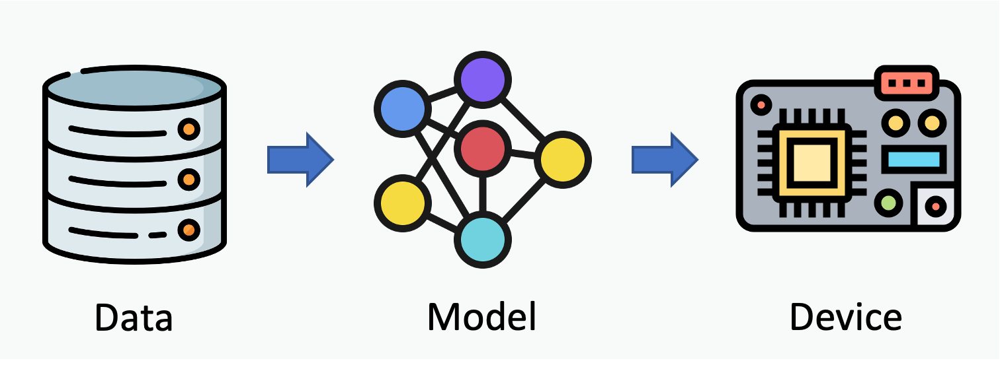
Most of the interesting data at the edge is unstructured — sound, images, vibration, raw text. It does not arrive in neat rows and columns. That is exactly why neural networks matter here: they find patterns in messy, high-dimensional, real-world signals that rule-based code cannot keep up with.
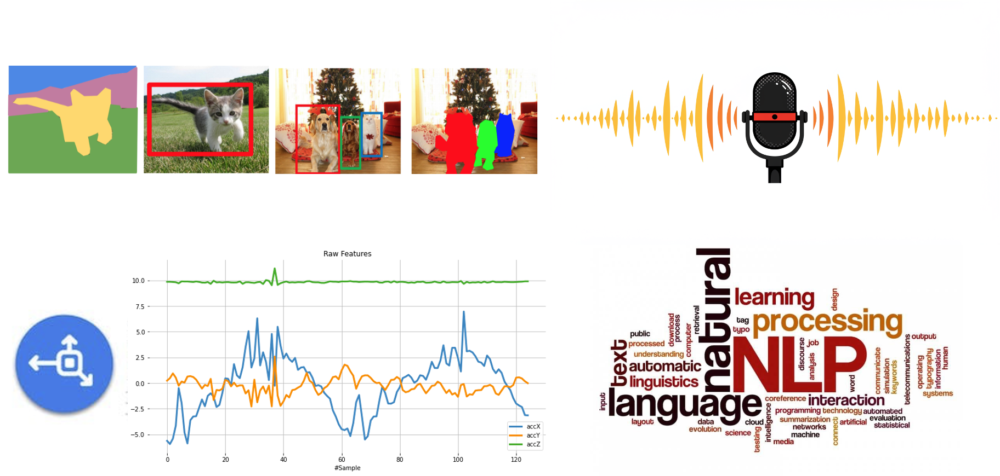
Which architecture does what
Different problems have historically been solved by different network architectures:
| Application | Architecture |
|---|---|
| Vibration analysis, simple classification | MLP — deep neural network |
| Image classification | CNN — convolutional neural network |
| Sequence and time-series tasks | RNN — GRU / LSTM |
| Image generation | GAN — generative adversarial network |
| Text generation, LLMs | Transformer (attention) |
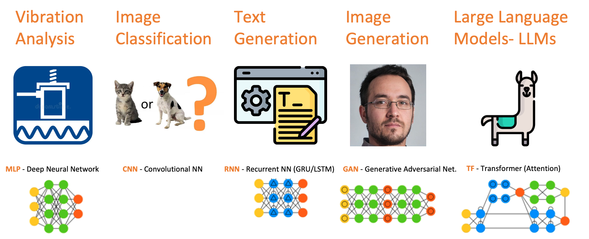
Language models sit at the top of that complexity ladder. That is exactly why running them on small hardware is hard, and why the rest of this chapter is mostly about making them smaller.
Complexity against hardware
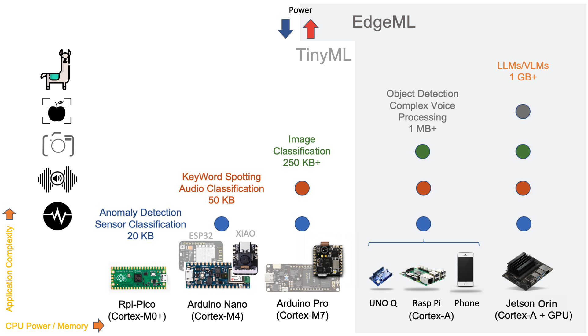
As application complexity rises, so do the demands on CPU, memory, and power. An ESP32 or a Seeed XIAO handles classic TinyML. Above that sit boards like the UNO Q, then Raspberry Pis and phones. The region beginning around 1 GB of memory is where SLMs and small VLMs become feasible at all.
The goal is never to run the biggest model the board will tolerate. It is to land on the smallest, cheapest device that still does the job well.
4. Language Models: LLMs and SLMs
LLMs and SLMs are neural networks built on the Transformer architecture, and they are very good at understanding and generating human language.
They were a genuine leap past earlier sequence models like RNNs for two reasons: they handle long-range dependencies far better, and they process tokens in parallel rather than strictly one after another. That parallelism is a large part of why these models could scale the way they did — you can throw far more hardware at training them.
The architecture was published in 2017, and it did not produce one model — it set off an explosion of them. The landscape as of 2026 splits roughly four ways:
| Group | Models | Weights |
|---|---|---|
| Open — China | GLM, Kimi, Qwen, DeepSeek | Downloadable |
| Open | Phi (Microsoft), Gemma (Google), Llama/Muse (Meta) | Downloadable |
| Closed | Gemini (Google), GPT (OpenAI), Claude (Anthropic), Grok (xAI) | API only |
That first column matters more than it might appear. Qwen — a Chinese open-weights model — is what every generative project in this book actually runs. The closed models in the third row are excellent and irrelevant here: you cannot download them, so you cannot run them on a board with no network connection. Local inference is only possible because a large part of the frontier chose to release weights, and a striking share of that openness currently comes out of China.
One caution, because the two tables in this chapter cut the same models along different axes: open does not mean small. Kimi K3 is open-weights and Chinese, and it is also a terabyte-scale model that needs a data centre to run — which is why it sits under “Data center” in the first table and under “Open — China” in this one. Downloadable and runnable on your hardware are separate questions, and a model has to satisfy both before it is a candidate for anything in this book.
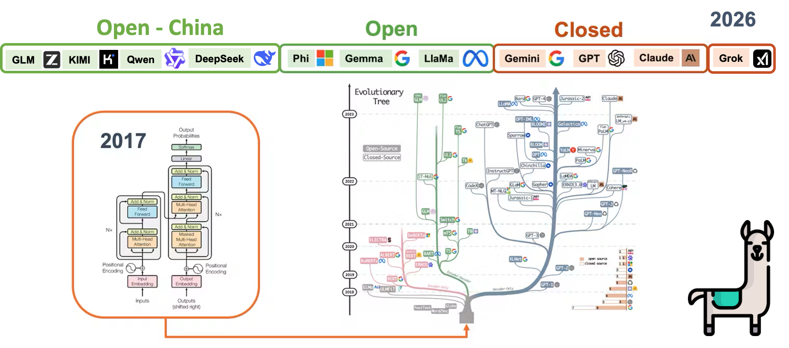
Tokens come first
Before a model can process text, it breaks that text into tokens — sub-word pieces, not words. “Understanding” might become two or three tokens; a rare technical term might become five.
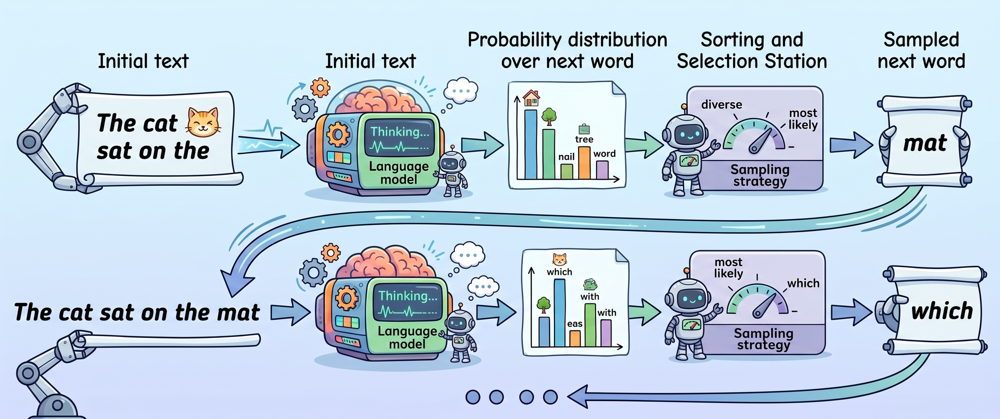
This matters more at the edge than anywhere else, because your context window, and therefore your memory budget, is measured in tokens. When SLMs at the Edge work out a RAM budget, and when the UNO Q chapters tell you to keep context at 512–1024 tokens, this is why.
Try it: OpenAI’s tokenizer at https://platform.openai.com/tokenizer — type a sentence and watch it split. Five minutes here is worth more than any explanation I can write.
Embeddings turn tokens into meaning
Each token is converted into an embedding: a numerical vector positioned in a high-dimensional space so that its location encodes meaning. Words with similar meanings sit near each other. Embeddings are the bridge between human language and the pure arithmetic the model actually performs.
Try it: TensorFlow’s Embedding Projector at https://projector.tensorflow.org/ lets you rotate through that space and watch related words cluster. And the Transformer Explainer from Georgia Tech’s Polo Club — https://poloclub.github.io/transformer-explainer/ — walks you through the attention layer by layer on a live model in your browser.
These two tools build more intuition than a static diagram can. If you are teaching from this book, it is worth ten minutes of class time.
How these models are trained
Training happens in two broad phases, and knowing them explains a lot of model behavior:
- Pretraining — the model digests an enormous amount of text and learns language structure and world knowledge. Expensive, done once, by organizations with large budgets.
- Post-training — in two parts. Supervised fine-tuning teaches it to follow instructions, and reinforcement learning from human feedback shapes it toward being helpful and aligned.
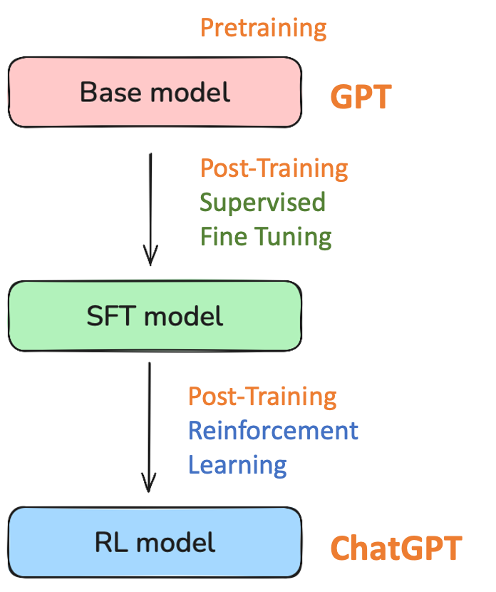
Pretraining is what makes a model knowledgeable; post-training is what makes it usable. The -Instruct or -it suffix on the model files you will download in later chapters means you are getting a post-trained version — the raw pretrained base model would not hold a conversation.
Andrej Karpathy’s “Deep Dive into LLMs like ChatGPT” is the best long-form treatment of this if you want to go further.
5. How Big Models Become Small
This is the part that makes edge deployment possible at all. Three techniques take something like Llama 70B down to a 1B–3B model that fits on modest hardware, while keeping as much capability as possible.
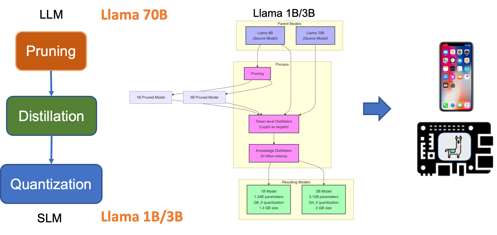
Pruning
A trained network carries many weights that contribute almost nothing to its output. Pruning finds and removes them, shrinking the model and speeding up inference. Done carefully, you can cut a substantial fraction of the parameters for a small accuracy cost — and the leaner model occasionally generalizes slightly better, since some of what you removed was memorization.
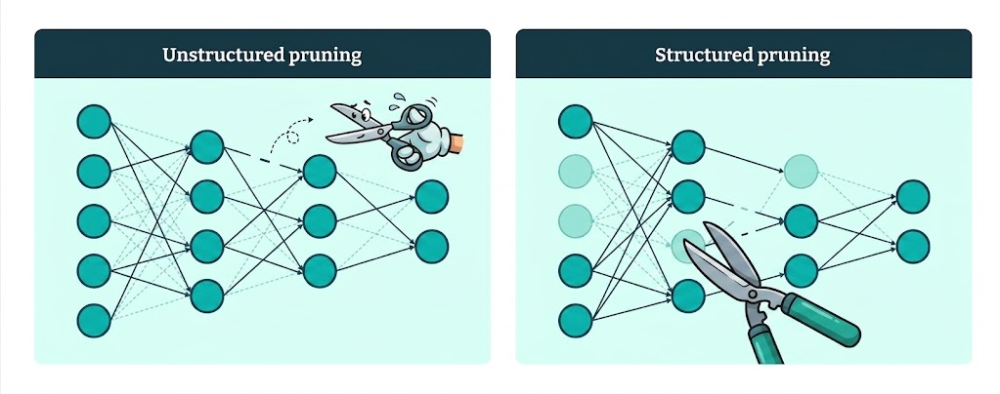
Knowledge distillation
A large, capable teacher model trains a much smaller student. The key idea is that the student does not learn only from the raw labels — it learns from the teacher’s full output distribution, the soft probabilities across all possible answers. That distribution carries far richer information than a single correct label: it shows what the teacher considered and how confident it was.
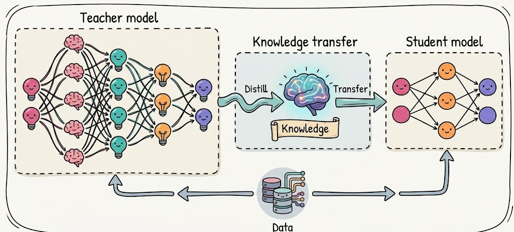
The result is a compact model that punches well above its parameter count. Most of the reason a 1B model in 2026 outperforms a 7B model from 2023 is better training data and distillation from stronger teachers.
A hands-on introduction to distillation is in the companion volume: KD Intro.
Quantization
Quantization reduces the numerical precision of the weights — storing them as 8-bit or 4-bit integers instead of 16-bit floats. A model at 4-bit takes roughly a quarter of the memory of the same model at 16-bit, and it runs faster, because moving less data through memory is most of what inference costs on a CPU.
The trade-off is accuracy, and it is not linear. Larger models tolerate aggressive quantization well; very small models do not, because they have less redundancy to spare. That specific problem — and what it means for choosing Q4 versus Q8 on a sub-1B model — is worked through with real measurements in Generative AI at the Edge.
For the practical side of all three techniques — file formats, the RAM budget arithmetic, and which quantization to actually download — see the next chapter, SLMs at the Edge.
6. From Assistant to Agent
It is worth stepping back to see how fast the shape of these systems has changed.
Early systems were assistants. They augmented human knowledge: you asked, they answered, the interaction ended. Today’s systems work through tool-calling APIs. They reach into the world, use its infrastructure, and take actions with consequences.
The software around the model that makes this possible is the harness: the layer that lets a model call functions, use tools, and operate in a loop rather than simply emitting text. When you run an SLM at the edge, the harness is what turns a text generator into something useful — it reads a sensor, decides, and triggers an action.
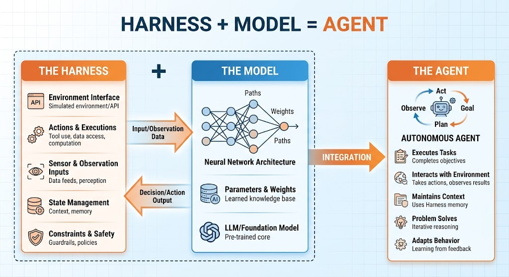
That word will come back. The Agentic AI chapter is entirely about building one, and GenAI Meets the Real World is a miniature harness: a model’s verdict becomes a number that lights an LED.
7. Four Ways to Run an SLM at the Edge
Which tool you choose depends mostly on your hardware.
| Tool | What it is | Where it fits |
|---|---|---|
| Ollama | Open-source framework with a model registry and REST API | The easiest entry point. Excellent on Raspberry Pi. Does not run easily on the UNO Q |
| llama.cpp | Lightweight C++ inference engine for quantized models | Tested successfully on the UNO Q. Preferred for control, compact size, and low memory use. Also efficient on the Pi |
| HF Transformers | Python library with the broadest model and task coverage | Well supported on Raspberry Pi; heavy for very constrained boards |
| LiteRT-LM | Google AI Edge solution aimed at production | Optimized for efficient deployment across edge devices |
For the constrained UNO Q work in this book, llama.cpp is the tool of choice — it is the one that fits, the one that gives the most control over memory, and the one with a server mode we build several projects on. You will meet Ollama and LM Studio in the next chapter, on your own computer, where the constraints are looser and the comparison is instructive.
8. Where This Goes
You now have the vocabulary: tokens, embeddings, attention, pretraining and post-training, pruning, distillation, quantization, and the harness. Everything from here is practice.
The next chapter runs a model on the computer you already own, so the concepts land before any board is involved. After that, the UNO Q — first setting it up, then compiling llama.cpp on it, then giving the model vision, sensors, and tools.
Nothing that follows requires you to remember the details of attention mathematics. It does require you to remember why a 0.8B model at 4-bit behaves differently from the same model at 8-bit, and why context length costs memory. Those two ideas come up in every chapter of Part 1.